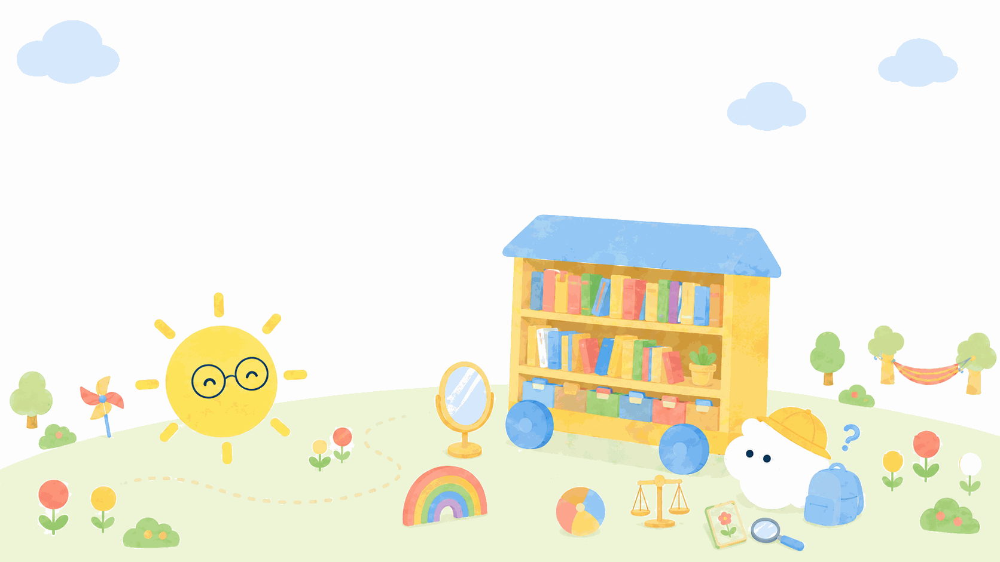

キャリアコンサルタント試験の出題範囲 — 公式の細目と、このサイトの対応表
学科試験の
更新日: 2026年10月2日
 モヤン
モヤン
出題範囲って、
 サニー先生
サニー先生
だいじょうぶ。
この表の使い方
出題範囲は、
- 詳細 … 確実に、
かつ、 深く 知っていなければならない - 一般的 … 知っていないと
実務に 支障が 生じる - 概略 … 浅く
広く、 常識と して 知って おく
「詳細」と
サニー先生
1問1答を
あなたの理解度(1問1答の結果から自動で表示)
- 社会的意義・役割まだ
記録が ありません - キャリア理論・カウンセリング理論まだ
記録が ありません - 職業能力開発・企業の支援まだ
記録が ありません - 労働市場・統計まだ
記録が ありません - 労働の法律・社会保障まだ
記録が ありません - 学校教育まだ
記録が ありません - メンタルヘルスまだ
記録が ありません - ライフステージ・多様な特性まだ
記録が ありません - 相談の技能まだ
記録が ありません - 倫理・自己研鑽まだ
記録が ありません
分野の
理解度は
 Ⅰ
Ⅰ キャリアコンサルティングの社会的意義
モヤン
「社会的意義」って、
サニー先生
「な
1 社会・経済の動向と、キャリア形成支援の必要性求められる知識:詳細
技術革新などの
この
この
2 キャリアコンサルティングの役割求められる知識:詳細
職業だけでなく
モヤン
サニー先生
この
この
 Ⅱ
Ⅱ キャリアコンサルティングを行うために必要な知識

モヤン
ここが
サニー先生
問題数も

1 キャリアに関する理論求められる知識:詳細
特性因子論、
ホランドさん
クランボルツさん
スーパーさん
この
この
2 カウンセリングに関する理論求められる知識:一般的(役割は詳細)
来談者中心、
モヤン
サニー先生
この
- グループを
活用した 意義、キャリアコンサルティング 有効性、 進め方の 留意点。 細目に 挙がっているのは、 グループワーク、 グループガイダンス、 グループカウンセリング、 グループエンカウンター、 サポートグループ
この

3 職業能力開発(リカレント教育を含む)の知識求められる知識:一般的
学び直しを
モヤン
サニー先生
この
この

4 企業におけるキャリア形成支援の知識求められる知識:一般的
雇用管理の
シャインさん
この
- 雇用管理と
人事労務 企業における 雇用管理の しくみ、 代表的な 人事労務施策・ 制度の 動向と 課題(職能資格制度、 目標管理、 人事考課、 ジョブ型雇用、 テレワークなど) - ワーク・ライフ・バランスワーク・ライフ・バランスの
理念 - 属性・雇用形態ごとの
課題 高齢者、女性、 若者などの 属性や、 雇用形態に 応じた キャリアの 共通的な 課題。 それを ふまえた 自己理解・仕事理解の 視点や 手法 - 主な
業種の 勤務形態、労働条件 賃金、 労働時間などの 具体的な 労働条件 - 人事部門との
協業 企業内のキャリア形成支援制度の 整備と、 その 実施の ための 人事部門等との 協業、 組織内の 報告の 必要性と 方法
この

5 労働市場の知識求められる知識:一般的
産業構造の
モヤン
サニー先生
この
この

6 労働政策・労働関係法令・社会保障制度の知識求められる知識:一般的
労働基準、
モヤン
サニー先生
この
- 労働時間等設定改善法労働基準関係の
法律と して、 労働基準法、 労働契約法、 労働安全衛生法と ならんで 細目に 挙がっている - 年金厚生年金、
国民年金 - 医療・介護の
保険 健康保険、介護保険 - その
他の 細目には労働関係法令 「その 他の 労働関係法令」と あり、 上の 法律に 限られない
この

7 学校教育制度とキャリア教育の知識求められる知識:一般的
学校の
モヤン
サニー先生
この
- 学校教育制度初等中等教育から
高等教育までの、 学校の 種類ごとの 教育の 目標 - キャリア教育の
あり方 青少年期の発達課題に 応じた キャリア教育の あり方(過去問では、 学習指導要領、 生徒指導提要、 進路指導も この 範囲で 出ています)
この

8 メンタルヘルスの知識求められる知識:一般的(リファー・職場復帰支援は詳細)
法令や
モヤン
サニー先生
この
- ストレスストレスに
関する 代表的な 理論、 職場の ストレス要因、 対処の 方法 - 職場の
対策 メンタルヘルスに関する 法令や 指針、 心の 健康を 保ち増進する 対策の 意義と 方法、 職場環境の 改善に 向けた 働きかけ方 - 代表的な
精神的な 就労支援で病気 よく 見られる 病気の 概要と 特徴的な 症状。 病気の 可能性が ある 相談者への 見立てと、 特別な 配慮の 必要性(この サイトに あるのは、 うつ病・適応障害の ページだけです)
この

9 中高年齢期を展望するライフステージと発達課題の知識求められる知識:一般的
キャリアの
モヤン
サニー先生
この
この

10 人生の転機の知識求められる知識:一般的
初めて
シュロスバーグさん
この
この

11 個人の多様な特性の知識求められる知識:一般的
障害の
モヤン
サニー先生
この
- 障害の
ある 障害の人 内容や 程度に 応じた 見立てと 留意点 - ニートなどの
若者 生活環境や生育歴に 応じた 見立てと 留意点 - 病気の
治療中の 治療の人 見通しや 職場環境に 応じた 見立てと 留意点 - その
他 細目は「等」で 終わっており、 上の 3つに 限られません (性的マイノリティへの 配慮など)
この
 Ⅲ
Ⅲ キャリアコンサルティングを行うために必要な技能
 モヤン
モヤン
技能って、
サニー先生
学科では

1 基本的な技能求められる知識:一般的
カウンセリングの
ロジャーズさん
この
- 積極的関わり
技法 情報提供、教示、 フィードバックなどの 意義、 有効性、 導入の 時期、 進め方の 留意点 - グループアプローチ若者の
職業意識の 啓発、 社会的・基礎的能力の 習得支援、 自己理解・仕事理解を 進める ための グループアプローチ - 相談過程の
進行管理 相談者の問題を 把握し、 相談過程の どの 段階に いるかを つねに 確かめ、 段階に 応じた 支援方法を 選ぶこと
この
2 相談過程において必要な技能求められる知識:一般的
相談場面の
パーソンズさん
ジェラットさん
この
- 相談場面の
設定 物理的環境の整備、 ラポールの 形成、 キャリア形成と キャリアコンサルティングへの 理解の 促進、 相談の 目標・範囲の 明確化 - 仕事の
理解の 「仕事」には支援 ボランティア活動など 職業以外の 活動も 含まれる こと。 職業や 労働市場の 情報の 集め方・ 使い方。 職務分析、 業務の 流れ、 業務改善、 職務再設計、 仕事上の 期待や 責任の 理解 - 自己啓発の
支援(啓発的経験) インターンシップ、職場見学、 トライアル雇用などで 職業を 体験する 意義と 目的 - 意思決定の
支援 キャリア・プランの作成支援(ライフプランを ふまえる)、 具体的な 目標設定への 支援、 能力開発に 関する 支援 - 方策の
実行の 相談者への支援 動機づけ、 方策の 実行の マネジメント(進み具合の 把握と 見直し) - 相談過程の
総括 適切な時期に おける 相談の 終了、 相談過程の 評価(相談者の 自己評価と、 キャリアコンサルタント自身の 自己評価)
この
 Ⅳ
Ⅳ キャリアコンサルタントの倫理と行動
モヤン
倫理って、
サニー先生
それだけじゃないよ。
1〜3 教育・普及活動、環境への働きかけ、ネットワーク求められる知識:一般的
キャリア形成の
モヤン
サニー先生
この
- 教育・普及活動個人・組織・社会一般に、
キャリア形成と キャリアコンサルティングの 大切さを 伝える こと。 教育研修 プログラムの 企画と 運営 - 環境への
働きかけ 個人への支援だけでは 解決できない 環境(学校や 職場など)の 問題の 発見、 指摘、 改善提案。 職場では、 人事部門との 協業、 経営層への 提言、 上司への 支援を 含む - ネットワークの
認識と 行政、形成 企業の 人事部門、 専門機関・ 専門家との ネットワークの 大切さ。 日ごろの 情報交換と 協力関係づくり。 心理臨床や 福祉の 専門機関との 協働 - 専門機関への
紹介と、 任務や専門家への 照会 自分の 能力の 範囲を 超える ときは、 相談者の 納得を 得たうえで 適切な 専門機関・ 専門家を 紹介する こと。 必要な 追加情報を 得たり、 別の 分野の 専門家に 意見を 求めたりする こと
この
4 自己研鑽と、指導を受ける必要性求められる知識:詳細
学び続ける
モヤン
サニー先生
この
5 キャリアコンサルタントとしての倫理と姿勢求められる知識:詳細
活動範囲と
モヤン
サニー先生
この
- 活動範囲・限界の
理解 任務上の限界、 自分の 力量の 限界、 実践する 場に よる 限界が ある こと。 範囲を 超えた 支援は、 相談者に とって 有害に なりうる こと - 守秘義務と
個人情報の 相談者の保護 プライバシーや 相談内容を、 許可なく 口外しない こと。 信頼関係と 個人情報保護法令の 両面から 最重要と されている - キャリアコンサルタントと
しての 個人の姿勢 人生に 関わる 役割と 責任の 自覚。 自己理解を 深め、 自分の キャリア形成に 必要な 能力開発を 行う こと
この
モヤン
まだ
サニー先生
テキストや
まだページがない項目について
「まだ
白書・
情報確認日: 2026-10-02 ／ 出典: